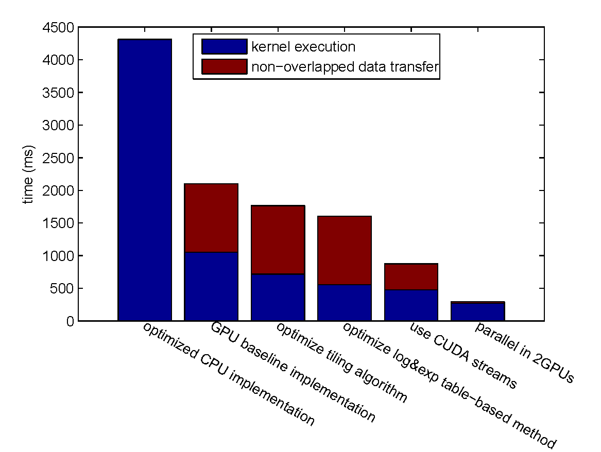

Accelerate Reed-Solomon Codes on GPUs
Shuai YUAN, Jerry Chou
LSALab
Overview
- Introduction
- Background
- Accelerating Operations in Galois Field
- Accelerating Matrix Multiplication
- Reducing Data Transfer Overhead
- Experiment
- Conclusion
Introduction
Why Redundancy?
- Nowadays, cloud storage vendors claim to provide highly available and stable services.
-
However, as the scale of storage system grows larger and larger, the probability of failure becomes significant:
If the MTTF (Mean Time To Failure) of one storage node is $P$, then the MTTF of a system of $n$ storage nodes is $\dfrac{P}{n}$.→ SLA (Service-Level Agreement) violation
Therefore, redundancy must be introduced into cloud system.
Why Redundancy?
- The simplest and straightforward redundancy solution is replication of the data in multiple storage nodes.
- Triple replication solution have been favored in distributed cloud systems like the GFS (Google File System) and HDFS (Hadoop Distributed File System).
Why Erasure Codes?
- Problem of replication: large storage overhead.
- Erasure codes can reduce the storage overhead significantly while at the same time maintaining the same level of reliability as replication.
Why Erasure Codes?
$(n, k)$ MDS (Maximum Distance Separable) codes where $n$ and $k$ are integers and $n > k$:
- File → $k$ equal-size native chunks.
- $k$ equal-size native chunks → $(n - k)$ code chunks.
- The native and code chunks are distributed on $n$ different storage nodes.
- tolerates the failure of any $n - k$ storage nodes.
Example:

|

|
| Reed-Solomon Code (n=4, k=2) | Replication |
Save 50% space!
Why Reed-Solomon Codes?
- Reed-Solomon codes $RS(k, n-k)$ are one of the most popular MDS erasure codes.
- $RS(10, 4)$ is used in HDFS-RAID in Facebook and $RS(6, 3)$ is used in GFS II in Google.
Shortcomings of Reed-Solomon Codes
- use matrix multiplication over Galois Field for encoding and decoding → extra high computation cost compared to replication
- Our contributions: use GPU to accelerate the Reed-Solomon encoding and decoding.
Background
Reed-Solomon Code Overview

|

|
| Reed-Solomon Encoding | Reed-Solomon Decoding |
Accelerate Operations in Galois Field
Accelerate Operations in Galois Field
- Addition/subtraction of two elements in GF($2^w$) in this field can be performed by inexpensive bitwise XOR of the elements.
- Multiplication of two elements is defined as the multiplication of two polynomials which represents the elements and modulo an irreducible generator polynomial.
Therefore, how to accelerate the time-consuming multiplication over GF($2^w$) will be our focus.
GPU Implementation: Loop-based or Table-based?
Loop-based Method
- compute directly
- computation bound
Table-based Methods
| Full Multiplication Table | "Double Table"/"Left-Right Table" | Log&Exp Table | |
| Space Complexity for GF($2^w$) | $O(2 ^ { 2w })$ | $O(2^{3w/2+1})$ | $O( 2^{w+1} )$ |
| Computation Complexity | one table-lookup | 2 table-lookup, 2 AND, 1 XOR, and 1 SHIFT | 3 table-lookup, 1 MOD, 1 ADD, and 2 branches |
| Memory space for GF($2^8$) | 64 KB | 8 KB | 512 Bytes |
Use log&exp table-based method in our GPU implementation.
GPU Implementation: Loop-based or Table-based?

- The loop-based method is able to achieve the maximum bandwidth even when the chunk size is small.
- The bandwidth of the table-based method can still scale up as the chunk size grows larger.
- The maximum bandwidth of the table-based method exceeds that of the loop-based method.
Further Improvement of the Log&exp Table-based Method
Further Improvement of the Log&exp Table-based Method
| Improvement Approach 1 | Replace slow modular operation with more efficient operations. |
| Improvement Approach 2 | Remove the slow modular operation by augmenting the exponential table. |
| Improvement Approach 3 | Further eliminates the conditional branch by augmenting both the exponential table and the logarithm tables. |
Further Improvement of the Log&exp Table-based Method
In GPU implementation, where to store the log and exp tables and how to initialize them will affect the performance.
Appropriate GPU memory:
- constant memory: off-chip memory whose accesses are usually cached in the constant cache
- shared memory: on-chip memory which has the smallest access latency except the register file
Further Improvement of the Log&exp Table-based Method
What we have implemented:
- Store two tables in the constant memory and initialize them at compile time.
- Store two tables in the shared memory and run-time initialize them serially at the beginning of each kernel function.
- Store two tables in the off-chip memory and then load into the shared memory parallely at the beginning of each kernel function.
Further Improvement of the Log&exp Table-based Method
encoding a 1GB file with $k = 4$ and $n = 6$.

- The elimination of conditional branches improves the performance, for it removes warp diverge.
- Accessing the tables in the constant memory is more time-consuming.
Accelerate Encoding/Decoding (Matrix Multiplication over Galois Field)
Naive Implementation

Tiling Algorithm

Further Improvement of Tiling Algorithm

How to Determine the Parameter of Tiles
- set tileDepth to $k$ → remove the loop of accessing matrix $A$ and $B$ tile by tile
- assign each thread compute one element of the product tile in matrix $C$ → the CUDA block size is equal to $\textrm{tileWidthRow} \times \textrm{tileWidthCol}$ → find the best CUDA block size by tuning occupancy
- Finally we need to further determine tileWidthRow and tileWidthCol.
How to Determine the Parameter of Tiles
| Strategy 1 | $\textrm{tileWidthRow} = \textrm{tileWidthCol}$ |
| Strategy 2 | $\textrm{tileWidthRow} = n - k$ |
| Strategy 3 | $$ \dfrac{ \textrm{tileWidthRow} }{ \textrm{tileWidthCol} } = \dfrac{ n - k }{ \textrm{chunk size} } $$ |
Accelerating Matrix Multiplication over Galois Field
use the following ten testcases for encoding:
- $k = 4$, $n = 6$, chunk size = 256 MB
- $k = 32$, $n = 64$, chunk size = 16 MB
- $k = 4$, $n = 132$, chunk size = 3968 Bytes
- $k = 8$, $n = 10$, chunk size = 64 MB
- $k = 16$, $n = 18$, chunk size = 16 MB
- $k = 128$, $n = 130$, chunk size = 2 KB
- $k = 32$, $n = 34$, chunk size = 8 MB
- $k = 2$, $n = 4$, chunk size = 4 MB
- $k = 2$, $n = 4$, chunk size = 1 KB
- $k = 16$, $n = 20$, chunk size = 16 MB
Accelerating Matrix Multiplication over Galois Field

Use strategy 2.
Reduce Data Transfer Overhead
Using CUDA Streams
CUDA streams are used for further overlapping data transfers with computation.

Sequential vs. Concurrent copy and execute
Using CUDA Streams
encoding under $k = 4, n = 6$ settings.
The input file size is scaled from 1000 MB to 2000 MB, and the CUDA stream number is increased from one to four.

using CUDA streaming can improve the performance by more than 29%.
Using CUDA Streams
encoding a 2000 MB file under $k = 4, n = 6$ settings.

The kernel execution time is increasing with the growth of the CUDA stream number. → The overhead of kernel execution will exceed the time saving of data transfer at some point.
Experiment
Experiment Setup
Experiment Setup
- CentOS-6 with 2.6.32 Linux kernel.
- Intel Xeon Processor E5-2670 v2 x 2
- 10 cores
- 2.5 GHz
- NVIDIA Tesla K20X GPU x 2
- 2688 CUDA cores
- peak performance: 1.31 Tflops (double precision floating point calculation) and 3.95 Tflops (single precision floating point)
- maximum size of GPU GDDR5 memory: 6 GB
- theoretical memory bandwidth 243 GB/s
- two copy engines → supports concurrent data copy and kernel execution
- maximum bidirectional bandwidth of the PCI-Express bus: 8 GB/s
Experiment Setup
- Input files are randomly generated.
- Most of our experimental results reflect the average of 100 runs.
- Due to the similarity of the performance result of encoding and that of decoding in most experiments, the latter one is omitted.
Overall Performance Evaluation
We evaluate the overall performance by encoding a 1600 MB file with $k = 4, n = 6$.
Overall Performance Evaluation
Step-by-step Improvement
Overall Performance Evaluation
GPU vs. CPU
- best CPU implementation (Jerasure library, compiled by clang with the -O3 compiler optimization flag): 4309.08 ms.
- optimized GPU implementation: 292.977 ms (14.71x speedup).
Conclusion
- We have studied several techniques to improve the performance of Reed-Solomon codes according to their coding mechanism, and figured out the best choices on the basis of GPU architecture.
- We have illustrated methods to reduce the data transfer overhead introduced by the GPU implementation.
- We present an optimized GPU implementation of Reed-Solomon Codes, which can achieve a speedup of 14.71 over the current best CPU implementation.